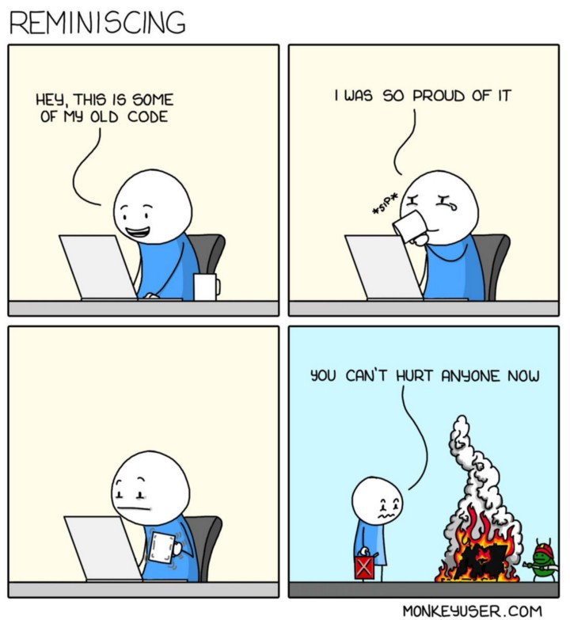

clean code >> quick and dirty
Contents
clean code >> quick and dirty#
Especially under time pressure, it can be very tempting to solve a problem by quickly writing code without much care for its structure and reusability.
Self-taught programmers (as many scientific researchers are) have the additional challenge that they might not have learned a language in a structured way, where one goes through every step and slowly absorbs the coding etiquette. “Learning by doing” is a great way to acquire new skills, but it is hardly linear. Thus, there is a chance that some clean code concepts got lost along the way. The good news is that it is always a good idea to catch up on gaps that will make your code more professional and stable. Additionally, your collaborators will thank you.

In the following snippets, I list a couple of tips/rules to keep in mind while coding. Let me know if you’re missing any so that I can complement. ;)
1# Naming conventions#
It’s a good idea to come up with a logical system to name different types of functions, files and folders as soon as you have a rough idea of how a project will look like and which building blocks it will entail. This way it will become easier to understand further down the line. Descriptive and easy to read names are preferred over ambiguous, short names.
e.g.
if naming files:
✓ DO: “2021-2022_inbound_transport_mywarehouse_mycompany.xlsx”
✗ DON’T: “transport updated new.xlsx”
if naming variables:
✓ DO: “total_gross_weight_kg = 5034”
✗ DON’T: “tweight = 5034”
additionally, be consistent with the wording:
✓ DO:
gross_weight_kg = 300
nett_weight_kg = 250
def fetch_incoming_products(response, variable):
# do something
pass
def fetch_outgoing_products(response, variable):
# do something
pass
✗ DON’T: (note “kg” vs. “t” in variable names, as well as the inconcise wording “variable” and “var”)
gross_weight_kg = 300
nett_weight_t = 250
def fetch_incoming_products(variable):
# {function action}
pass
def fetch_outgoing_products(var):
# {function action}
pass
2# Don’t use standalone numbers without explanation#
At the moment you’re writting a piece of code, you’ll know exactly what you meant with a given number. However, there’s a risk that you’ll need that same number again in another section of the code. Instead of repeating yourself, it is better practice to allocate a variable for defining this number.
✓ DO:
gravity_m_s2 = 9.81
def calc_force_of_gravity(mass):
force_of_gravity = mass * gravity_m_s2
return force_of_gravity
✗ DON’T:
def calc_force_of_gravity(mass):
force_of_gravity = mass * 9.81
return force_of_gravity
TO BE CONTINUED
X# Unit tests#
A unit is a small, testable, part of a code. Further, unit tests verify that idependent parts of the code are working properly. They can be implemented by creating test cases which are used to verify the code.
e.g. the function “sum_values”:
def sum_values(values_list):
total_sum = 0
for value in values_list:
total_sum += value
return total_sum
“sum_values” sums all values within a list. A unit test to check if this function works properly could be “test_sum”:
def test_sum(test_values):
assert sum_values(test_values) == sum(test_values),f"Sum should be: {sum(test_values)}, got: {sum_values(test_values)}"
print("passed test_sum!")
… and then use it for testing!
test_values = [1,10,100,1000]
test_sum(test_values)
passed test_sum!
X# Use git for version history#
It is common that features get updated, improved, and methods can be re-written. To eliminate the need of commenting out old code and replacing it by a new version, which would likely become confusing at some point, I really recommend using a version control system (e.g. git) to keep track of versions of your code and documents.